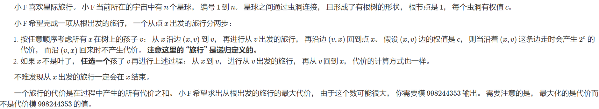
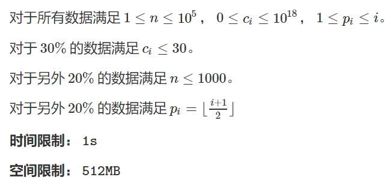
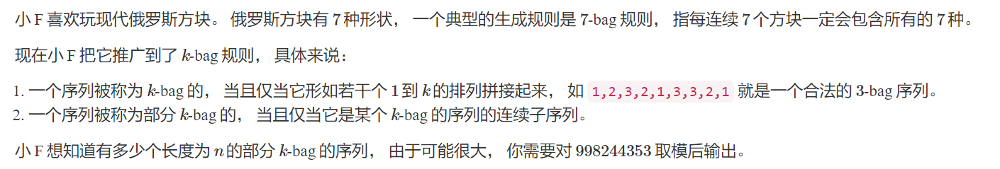
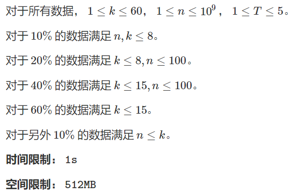
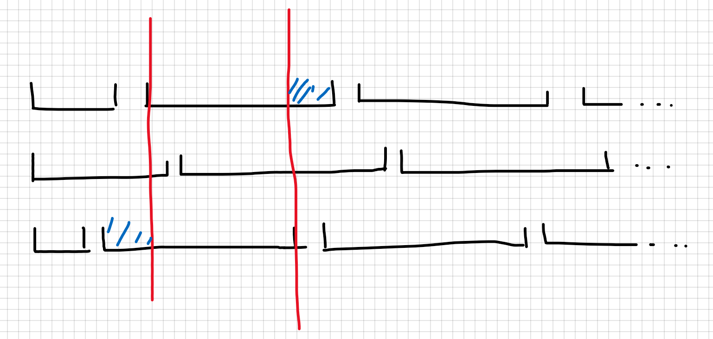
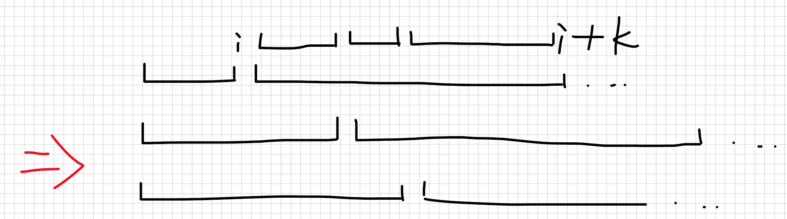
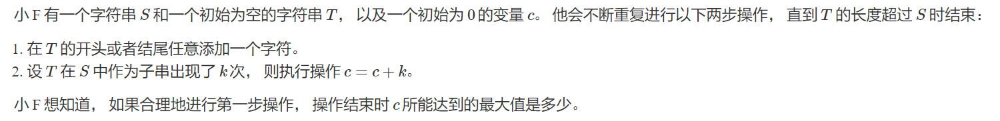
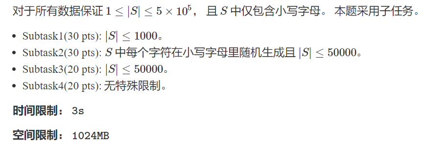

T1 Interstellar


显然有$dp[u]=dp[v’]\times 2+\sum_{v\neq v’}dp[v’]$，这里$v’$是$u$的$dp$值最大的儿子。
每个点开个set维护$dp$值中所有为$1$的位置，需要支持比较两个点的$dp$值大小、将两个点的$dp$值相加以及给某个点乘$2$。
1 |
|
T2 K-bag Sequence


考虑这样一种暴力：
首先容斥一下，枚举从哪些位置开始匹配一定合法，从剩下的位置开始匹配可能合法，也可能不合法。

黑色区间表示所有的限制，每个黑色区间内每种数只能出现一次，同一行的黑色区间表示同一种限制：即从某个位置开始匹配。根据定义，每一行的黑色区间中，除了第一个与最后一个区间长度可能小于$k$以外，剩下的区间长度一定等于$k$。
我们不妨将“区间内的数两两不同”称为一个排列，那么这些限制的端点将会把整个序列划分成若干段，每一段内都必须是一个排列，并且如图所示，构成蓝色的区间的数必须完全相同（顺序可以不同）。
考虑这些开始匹配的位置中最小的那一个（注意：对于第一段长度等于$k$的限制，我们认为它的开始匹配位置为$k$而不是$0$），假设这个位置为$i$，那么$[i+1,i+k]$这个区间将会被划分为若干段。

这些段构成了$k$的一个划分，并且除了划分出的最后一段以外，$[1,i]$与$[i+1,k+1]$划分出的段的任意一个前缀都应是一个排列。另外，$[i+1,k+1]$也应是一个排列。
根据定义，$i$不能大于最后一个被划分出的段的长度，否则将出现一个限制的匹配位置大于$k$。
对于$[i+1,k+1]$，我们可以给它被划分出的每一段分配填入的数，方案数为一个组合数乘上阶乘。对于$k+1$之后的每一段，这个段内填的数必须与$[i+1,k+1]$中对应段填的数完全一致，因此对答案的贡献仅为一个阶乘。
注意最后的一段长度可能不到$k$，需要特殊考虑。
暴力枚举划分的代码如下
1 |
|
将枚举划分改为$dp$即可，时间复杂度$k^3$。
1 |
|
T3 String Cheese


建出后缀树，显然最终我们一定会在一个点上走到它的$mxlen$，然后选择是往前添加字符还是往后添加字符。因为串越长，它在$s$中的出现次数就越少，而同一个点中的串的出现次数是相同的。
向前添加字符对应在后缀树上往子树走，向右添加字符对应在DAG上走。记$dp[i]$表示当前串为$i$号节点能代表的最长的串，进行若干次操作能得到的最大值。
1 |
|